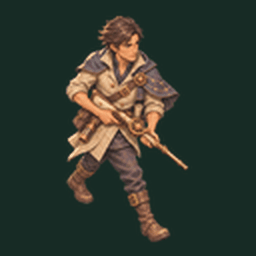
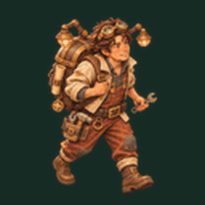
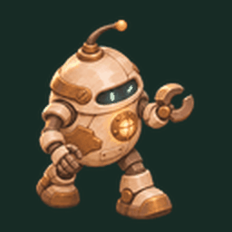
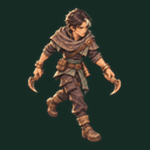

六人走路动作 v005
保持已确认角色外形，新增四帧腿部动作。游戏内移动时播放，停下切回原站姿；左右镜像转向。此页为匀速动作预览；尚非八方向独立动作。
岩灯
四帧迈步 · 游戏内按移动距离播放
逐隼

四帧迈步 · 游戏内按移动距离播放
砾砂

四帧迈步 · 游戏内按移动距离播放
霁月
四帧迈步 · 游戏内按移动距离播放
螺灯

四帧迈步 · 游戏内按移动距离播放
墨刃

四帧迈步 · 游戏内按移动距离播放
提示词、参考哈希与输出追踪